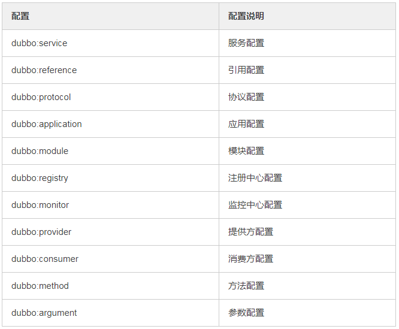
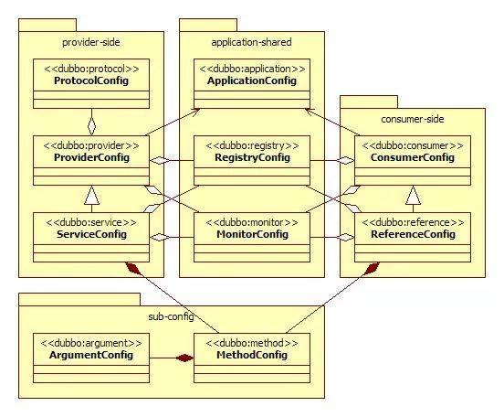
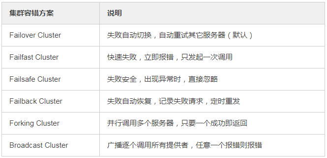
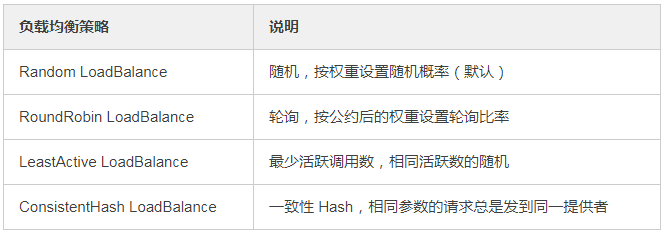

Dubbo是什么？
Dubbo能做什么？
Dubbo内置了哪几种服务容器？
Dubbo 核心的配置有哪些？
Dubbo有哪几种集群容错方案，默认是哪种？
Dubbo有哪几种负载均衡策略，默认是哪种？
Dubbo默认使用的是什么通信框架，还有别的选择吗？
你觉得用Dubbo好还是SpringCloud好？
Dubbo是阿里巴巴开源的基于 Java 的高性能 RPC 分布式服务框架，现已成为 Apache 基金会孵化项目。致力于提供高性能和透明化的RPC远程服务调用方案，以及SOA服务治理方案。
简单的说，dubbo就是个服务框架，如果没有分布式的需求，其实是不需要用的，只有在分布式的时候，才有dubbo这样的分布式服务框架的需求，并且本质上是个服务调用的东东，说白了就是个远程服务调用的分布式框架（告别Web Service模式中的WSdl，以服务者与消费者的方式在dubbo上注册）
其核心部分包含:
远程通讯: 提供对多种基于长连接的NIO框架抽象封装，包括多种线程模型，序列化，以及“请求-响应”模式的信息交换方式。
集群容错: 提供基于接口方法的透明远程过程调用，包括多协议支持，以及软负载均衡，失败容错，地址路由，动态配置等集群支持。
自动发现: 基于注册中心目录服务，使服务消费方能动态的查找服务提供方，使地址透明，使服务提供方可以平滑增加或减少机器。
透明化的远程方法调用，就像调用本地方法一样调用远程方法，只需简单配置，没有任何API侵入。
软负载均衡及容错机制，可在内网替代F5等硬件负载均衡器，降低成本，减少单点。
服务自动注册与发现，不再需要写死服务提供方地址，注册中心基于接口名查询服务提供者的IP地址，并且能够平滑添加或删除服务提供者。
Dubbo采用全Spring配置方式，透明化接入应用，对应用没有任何API侵入，只需用Spring加载Dubbo的配置即可，Dubbo基于Spring的Schema扩展进行加载。
Spring Container
Jetty Container
Log4j Container

配置关系：



Dubbo 默认使用 Netty 框架，也是推荐的选择，另外内容还集成有Mina、Grizzly。
没有好坏，只有适合不适合。
dubbo的优势
单一应用架构，当网站流量很小时，只需一个应用，将所有功能都部署在一起，以减少部署节点和成本。此时，用于简化增删改查工作量的 数据访问框架（ORM）是关键。
垂直应用架构，当访问量逐渐增大，单一应用增加机器带来的加速度越来越小，将应用拆成互不相干的几个应用，以提升效率。此时，用于加速前端页面开发的 Web框架（MVC）是关键。
分布式服务架构，当垂直应用越来越多，应用之间交互不可避免，将核心业务抽取出来，作为独立的服务，逐渐形成稳定的服务中心，使前端应用能更快速的响应多变的市场需求。此时，用于提高业务复用及整合的 分布式服务框架（RPC）是关键。
流动计算架构当服务越来越多，容量的评估，小服务资源的浪费等问题逐渐显现，此时需增加一个调度中心基于访问压力实时管理集群容量，提高集群利用率。此时，用于提高机器利用率的 资源调度和治理中心（SOA）是关键。
SpringCloud优势
约定优于配置
开箱即用、快速启动
适用于各种环境
轻量级的组件
组件支持丰富，功能齐全
两者相比较
1、dubbo由于是二进制的传输，占用带宽会更少
2、springCloud是http协议传输，带宽会比较多，同时使用http协议一般会使用JSON报文，消耗会更大
3、dubbo的开发难度较大，原因是dubbo的jar包依赖问题很多大型工程无法解决
4、springcloud的接口协议约定比较自由且松散，需要有强有力的行政措施来限制接口无序升级
5、dubbo的注册中心可以选择zk,redis等多种，springcloud的注册中心只能用eureka或者自研
根据具体的团队水平，业务情况等特点，dubbo和SpringCloud各自可以发挥各自不同的优势，没有最好的框架，只有最合适的。（这道题比较灵活，要是提前知道对方公司采用的是哪个，可以使劲吹哪个~）
最近三期